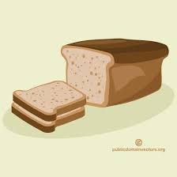

Bread

Description
A food made of flour, water, and a leavening agent such as yeast mixed together and baked. Useful for making PB & J's.
Ingredients
- Warm water, (105-115 degrees)
- Active Dry yeast: Instant or rapid rise yeast can be substituted.
- Granulated sugar or honey: the sugar is used to “feed” the yeast and tenderize the bread.
- Salt: to enhance flavor
- Oil: Vegetable or canola oil, or melted butter could be substituted
- Flour: Bread Flour or All-Purpose Flour can both be used with no changes to the recipe. The exact amount of flour used will vary depending on different factors (altitude/humidity etc.). What matters is the texture of the dough. It should be smooth and pull away from the sides of the bowl. It’s important not to add too much flour or your bread will be dense. The dough should be just slightly sticky when touched with a clean finger.
Steps